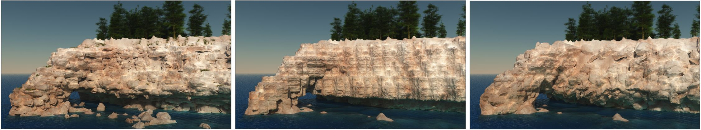

Axel Paris - Research Scientist
Home
Publications
Email
Twitter
Modeling Rocky Scenery using Implicit Blocks
June 25, 2020.

Preprint
PDF
Video
Code
Talk
We present a novel geologically-based method
to generate vertical walls of rocky cliffs, crags
or promontories. Our method procedurally generates a
distribution of fractures in the bedrock to create a set of
tiling blocks defined as implicit volumetric primitives.
Blocks are in turn implicitly replicated over the vertical
parts of the terrain and combined together to obtain
a consistent volumetric representation of the fractured
bedrock patterns using generalized union and blending
operators. Our framework provides multiple levels of
control: in addition to automatically generated blocks,
the geometry of specific ones can be prescribed by the
user using implicit primitives or construction trees, the
shape of the blocks can be controlled by several parameters,
and the placement rules may adapt according to
the underlying geological strata and geometry of the
terrain.
@article{Paris2020Blocks,
author = {Paris, Axel and Peytavie, Adrien and Gu{\'e}rin, Eric and Dischler, Jean-Michel and Galin, Eric},
title = {Modeling Rocky Scenery using Implicit Blocks},
journal = {The Visual Computer},
volume = {36},
number = {10},
year = {2020},
pages = {2251--2261}
}